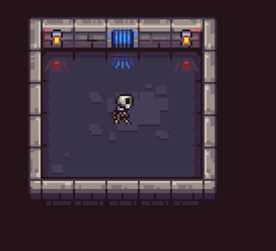
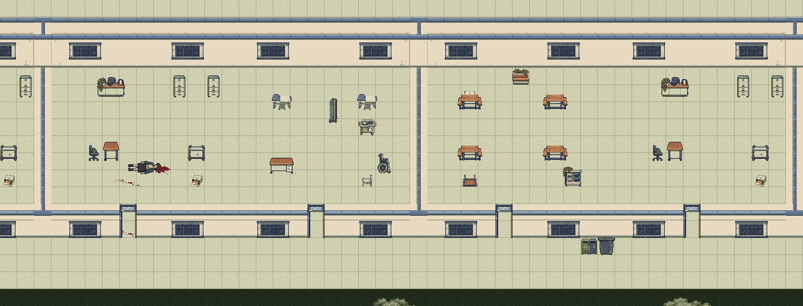
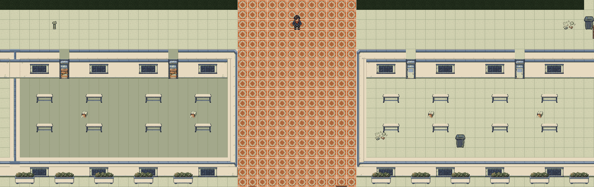

The floor grid stays orthogonal. Room volume comes from authored wall faces, structural returns, corners and a distinct foreground face. The original thin nadir/floor-plan presentation was rejected.



All three Building C floors and room register | Editable Tiled project | Research and repair contract | Downloaded LPC source archive | Artwork attribution
Haunted School by Thurraya is reference-only, as requested by the user to preserve commercial release. Its download returned HTTP 429; no native files from that pack are integrated. The actual wall atlas is LPC Walls (CC BY-SA 3.0), with matching independently authored architecture parts.
This is editable map/source authoring, not an executable multi-floor mission. No gameplay or full-building art acceptance is implied by these pictures.